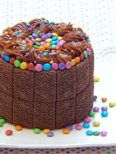
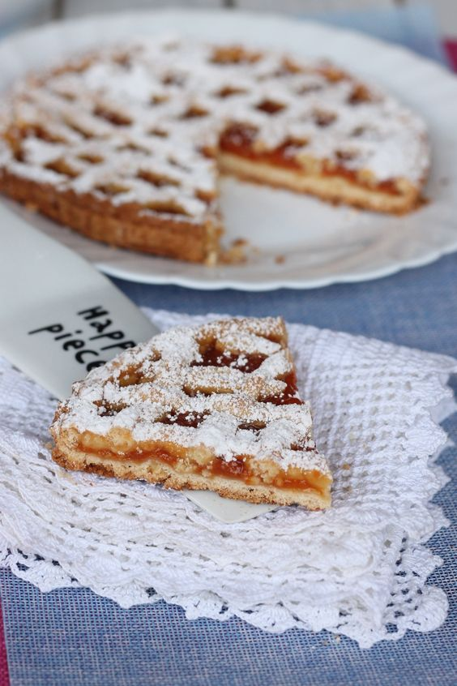

Le presentamos a la choco torta mas rica que van a probar con el mejor dulce de leche y chocolinas

Con una porcion te quedas corto pedila completa

Si te queres quedar mas que bien.. aca te dejo la mejor torta de dulce consulte por varios diseños

Una rica idea para la merienda o simplemente para compartir

Hecha con amor y la mejor materia prima, con un membrillo exquisito

Para compartir con los mates una version del biscochuelo que hacemos en dulce meru

Con una rica masa mas la crema y ese toque que le da la frutilla nada puede salir mal

Otra opcion para tu cumple o de un buen amigo.
- Ingredientes nutritivos
Cuando nos referimos a la repostería casera o dulces artesanos, preparados en fábricas tradicionales, sabemos que la elaboración de los mismos se lleva a cabo a base de huevo, harina, mantequilla, leche y azúcar.
Si hablamos en estrictos términos nutricionales, podemos afirmar que todos estos ingredientes son de la mejor calidad y necesarios para tener una alimentación equilibrada. - Alimento completo
Un dulce casero, elaborado con productos frescos y de calidad, puede llegar incluso a sustituir el desayuno, de forma eventual.
En esencia, este tipo de dulces tradicionales tienen todo lo necesario para ser considerados un plato bastante completo, siempre hablando en términos nutricionales. - Libre de conservantes
No podemos negar que los dulces de fabricación industrial sean deliciosos, porque lo son, pero ¿y nutritivos?
Realmente este tipo de dulces, los industriales, son muy poco saludables, ya que éstos están repletos de conservantes, saborizantes artificiales y otras series de ingredientes que les proporciona un mejor sabor y aspecto que no son para nada saludables para nuestro cuerpo, por ejemplo, como el tan polémico aceite de palma.
En el extremo contrario nos encontramos los dulces tradicionales, elaborados mediante la repostería casera. Estos dulces se haya libre de todo tipo de ingredientes perjudiciales, por lo que son la mejor opción a la hora de darse un “dulce gusto”. - Menor cantidad de calorías
La repostería casera nos proporciona dulces tradicionales o caseros con una menor cantidad de calorías comparado con los dulces industriales.
Según los expertos, una ración de algún dulce casero puede llegar a tener unas 200 calorías, frente a las 400 o más calorías que tienen los dulces industriales. - Menor cantidad de grasa
En cuanto a la grasa se refiere, la repostería casera nos posibilita la opción de suplir algunos de los ingredientes según criterio propio, de modo que podemos reducir el uso del aceite de oliva, poner menos azúcar, utilizar mantequilla baja en grasa… en fin, se pueden hacer mucho más saludable de lo que ya de por sí lo son. - Reducción del colesterol
En la misma línea que lo anteriormente citado, los dulces elaborados a través de la repostaría casera nos permitirá controlar los ingredientes que lleva, siendo estos ya de por sí siendo sanos. Ello se traduce en que su ingestión no sea perjudicial para nuestro colesterol. - Bueno para la salud
Tomar azúcar, así como otros de los alimentos que llevan los dulces caseros es necesario para nuestro cuerpo. Por lo que su ingestión es saludable. - Reduce la contaminación
¿Cómo? os preguntaréis. Fácil, este tipo de dulces se elabora mediante repostería casera, no industrial, con lo cual siempre va a ser menos contaminante que la segunda. - Expresión de identidad
La repostería casera es una expresión representativa de la cultura y un factor de identidad, ya que se trata de la elaboración artesana de dulces respetando la receta tradicional que va pasando de padres a hijos, de generación en generación, lo que se convierte como decíamos en una verdadera seña de identidad. - Resumiendo
La repostería casera conlleva menos contaminación, control de azúcar, menor consumo de calorías, menor ingesta de grasa y colesterol, productos naturales, frescos y de inmejorable calidad… y está riquísima…